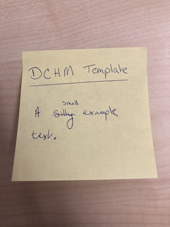

Arbetarrörelsens främsta symbol är den röda fanan. Fanan ägs av en förening och förmedlar ett budskap.När den svenska fackföreningsrörelsen började
anta socialismen som sin ideologi på 1880-talet skapade fackföreningarna ett nytt bildspråk som förenade den internationella socialismens röda färg
och politiska symboler med det lokala arbetet. De politiska bildsymbolerna är socialismens internationella frihetsgudinna iförd en frihetsmössa,
framför en soluppgång som visar att den nya dagen gryr. Hon står på internationalismens jordglob ovanför broderskapets handslag. De fackliga bilderna
visar den egna erfarenheten i arbetslivet. Hantverksföreningarna kunde ha en arbetssymbol i form av ett verktyg eller en arbetsprodukt, grovarbetarnas
fanor visade det kollektiva arbetet och alla visade vikten av gemensam kamp för bättre arbetsvillkor och demokratiska rättigheter. På fanan målades också
politiska deviser och föreningens stiftelsedatum, ej att förväxla med fanans tillkomsttid. Det kunde ta många år att samla in medel för att ha råd att
skaffa en fana. Fanans motiv bestämdes av föreningen som sedan lät en fankonstnär måla fanduken. Fankonstnär blev ett yrke mot slutet av 1800-talet då
efterfrågan på både arbetarrörelsefanor och andra folkrörelsefanor var stor. De kunde vara dekorationsmålare eller fotografer i botten. Materialet i
fanorna var till en början siden men det sköra materialet ersattes ibland av ylle som var mer hållbart i demonstrationernas hårda vindar. Målningen var i
allmänhet oljefärg på en grund av äggvita men flera fanmålare konstruerade egna färgsammansättningar. Några fanor broderades av en brodös. Toppemblemet i
form av en arbetssymbol för föreningen tillverkades ibland av en medlem, åtminstone så länge toppemblemen snidades i trä. Gjutna toppemblem förekom också.
De vanligaste deviserna under fackföreningsrörelsens pionjärtid var:
Enighet ger styrka
Frihet Jämlikhet Broderskap
Organisation är makt